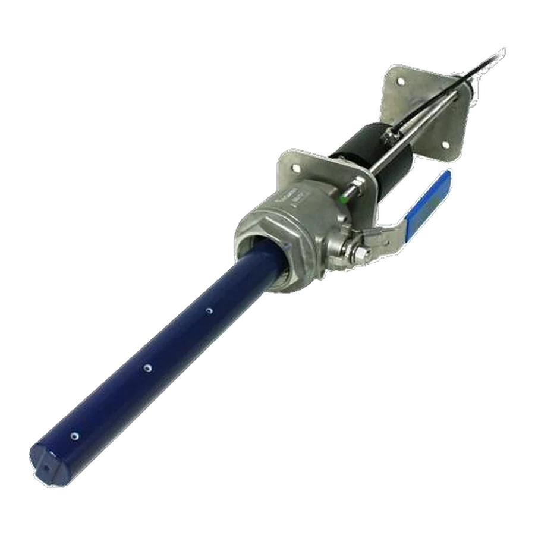

TORPEE-MAGDébitmètre électromagnétique à insertion
Pour les conduites d’eau potable en charge, du DN 100 au DN 2500. La sonde mesure la vitesse en plusieurs points de la section et se pose par un simple piquage, sans vidanger ni découper la conduite.
Idéal pour
- Comptage d’eau potable
- Pose sans coupure d’eau
- Remplacement d’une manchette
- Gros diamètres
- Certifié ACS

Points forts
Une sonde, un piquage, et la mesure du débit sur les conduites où une manchette demanderait des travaux lourds.
- DN 100 à 2500Deux tailles de sonde couvrent toute la gamme. Au-delà, sur consultation.
- Sans coupure d’eauInsertion conduite en service, jusqu’à 17 bar, à travers une vanne à boule.
- ± 0,5 %De la mesure, de 0,25 à 6 m/s. ± 0,8 % de 0,02 à 0,25 m/s.
- 2 à 7 paires d’électrodesRéparties sur le diamètre : la mesure tient compte du profil de vitesse réel.
- Sur pilesAvec le convertisseur TMC-15 : environ un an sur 6 piles D, une mesure toutes les 2 s.
- Certifié ACSAttestation de conformité sanitaire pour le contact avec l’eau potable.
Principe de mesure
La sonde porte de 2 à 7 paires d’électrodes en graphite, réparties sur le diamètre de la conduite. Chaque paire mesure la vitesse locale du liquide.
La vitesse moyenne est calculée à partir de l’ensemble de ces points. Elle tient compte du profil de vitesse réel, là où une sonde à un seul point l’estime.
- Mesure de 0 à 6 m/s, selon le diamètre et la sonde
- Version monodirectionnelle ou bidirectionnelle
- Conductivité du liquide : 5 µS/cm au minimum
Votre conduite
Choisissez le diamètre de la conduite : la taille de sonde et le nombre de paires d’électrodes s’affichent.
DN600
Chaque référence couvre une plage de diamètre intérieur : le DN 100 accepte de 90 à 125 mm. Le diamètre intérieur exact n’est pas nécessaire pour engager une commande.
Pose en charge, sans coupure d’eau
Ni vidange, ni découpe : c’est ce qui permet aussi de remplacer un débitmètre à manchette défectueux sans le déposer.
- Piquage et vanne à bouleUn seul piquage 1½″ ou 2″ sur la conduite, équipé d’une vanne à boule.
- Insertion de la sondeManuelle, conduite en service, jusqu’à 17 bar.
- Raccordement du convertisseurTMC-20 ou TMC-15. La longueur de câble, fixée à la commande, entre dans l’étalonnage.
- Mise en service par COMETECVérification de l’installation, configuration du convertisseur et formation de vos équipes.
La pose près d’un coude est possible, avec une précision réduite.
Caractéristiques
Deux convertisseurs au choix : le TMC-20 pour un poste alimenté, le TMC-15 pour un point de mesure autonome.
| Diamètres | DN 100 à DN 2500, au-delà sur consultation |
|---|---|
| Sonde 1½″ | DN 100 à DN 1500 |
| Sonde 2″ | DN 1000 à DN 2500 |
| Paires d’électrodes | 2 (DN 100 à 150), 3 (DN 200 à 250), 5 (DN 300 à 1500) en 1½″ 5 jusqu’au DN 1450, 7 (DN 1500 à 2500) en 2″ |
| Plage de vitesse | 0 à 6 m/s, selon diamètre et sonde |
| Précision | ± 0,5 % de la mesure de 0,25 à 6 m/s ± 0,8 % de la mesure de 0,02 à 0,25 m/s |
| Linéarité | 0,2 % de la mesure |
| Reproductibilité | 0,2 % de la gamme |
| Conductivité minimale | 5 µS/cm |
| Pression maximale | 17 bar |
| Température du liquide | -10 à 60 °C |
| Matériaux en contact | Inox 316, électrodes graphite, joint silicone |
| Protection | IP68 |
| Câble | 10 m en standard, 100 m au maximum |
| Filetage | BSP, NPT sur demande |
| Caractéristique | TMC-20 | TMC-15 |
|---|---|---|
| Usage | Poste alimenté en permanence | Point de mesure autonome |
| Alimentation | 100 à 240 Vac ou 12 à 48 Vdc | 6 piles D alcalines, packs lithium sur demande |
| Autonomie | Sans objet | Environ 1 an, mesure toutes les 2 s |
| Sorties | 2 sorties 4-20 mA isolées, 2 sorties tout ou rien ou fréquence | Sortie impulsionnelle vers un enregistreur |
| Affichage | Écran LCD : vitesse, débit, totalisation | Écran sur la version IP67 |
| Options | RS485 Modbus RTU, enregistrement sur carte microSD | Boîtier étanche IP68 |
| Protection | IP67 | IP67 ou IP68 |
Documentation
Fiche technique en téléchargement libre. La notice est remise avec l’appareil et envoyée sur simple demande.
Cas d’installation
Des installations commentées : le contexte, la contrainte du site et la raison du choix.
Emplacement des photos de terrain.
Chaque cas présentera une photo de l’installation, le diamètre, le convertisseur retenu et la raison de ce montage.
Questions fréquentes
Les questions que nous posent le plus souvent les exploitants et les bureaux d’études.
Peut-on installer le TORPEE-MAG sans couper l’eau ?
Oui. La sonde s’insère conduite en service, à travers une vanne à boule montée sur un piquage 1½″ ou 2″, jusqu’à 17 bar.
Sur quels diamètres de conduite s’installe-t-il ?
Du DN 100 au DN 2500 en standard, au-delà sur consultation. La sonde 1½″ couvre les DN 100 à 1500, la sonde 2″ les DN 1000 à 2500. Au-delà du DN 1000, la sonde 2″ est réservée aux vitesses élevées.
Quelle est sa précision ?
± 0,5 % de la mesure entre 0,25 et 6 m/s, et ± 0,8 % entre 0,02 et 0,25 m/s.
Quelle différence avec un débitmètre électromagnétique à manchette ?
La manchette impose de couper la conduite et de la vidanger. La sonde à insertion ne demande qu’un piquage. Elle permet aussi de remplacer une manchette défectueuse sans la déposer.
Fonctionne-t-il sans alimentation électrique ?
Oui, avec le convertisseur TMC-15, alimenté par 6 piles D. Son autonomie est d’environ un an pour une mesure toutes les 2 secondes.
Faut-il connaître le diamètre intérieur exact pour commander ?
Non. Les sondes sont proposées par pas de DN 50, et chaque DN couvre une plage de diamètre intérieur : de 90 à 125 mm pour le DN 100.
Pourquoi indiquer la longueur de câble à la commande ?
La longueur du câble entre la sonde et le convertisseur entre dans l’étalonnage de l’appareil. Elle est donc fixée à la commande : 10 m en standard, jusqu’à 100 m.
Autres débitmètres en charge
Pour d’autres diamètres, une mesure ponctuelle ou un contrôle sans intervention sur la conduite.

Votre interlocuteur pour le TORPEE-MAG
Le technico-commercial de votre secteur étudie la conduite avec vous et met l’appareil en service.